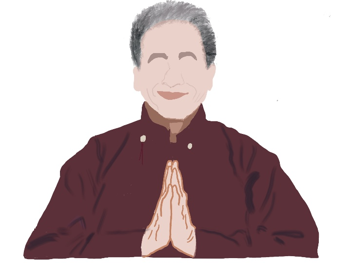

The Zanskar valley in Ladakh offers a scenic route into the past, present and future of the region. The famous ‘Chadar’ trek, literally translated as sheet in English, is a roughly 45 mile route, not along, but atop the frozen river Zanskar. Before it became a famous and potentially dangerous instagrammable activity, this was the only way for residents of the Zanskar region to reach Leh, the capital of Ladakh. You walk on an ice sheet that is as thick as cement in some places, yet in others, it’ll make a little creak here and a little movement there, to remind you that you are not walking on solid ground. Every step has to be taken carefully- trekkers are told to stay strictly in line. Even before you start the tedious walk over 9 days, you are required to take a few days to get used to the high altitude. Yet, the trek attracts more than just thrill seekers. The frozen river is in the gorge of the mountain ranges of Zanskar. Through the entire trek you will see a handful of colors- the blue green and white of the river, the beige terrain that immediately surrounds you, zigzagging its way to the higher snow covered peaks of white; the blue skies and splashes of white clouds. At night, you will see stars compete with each other for space. Anyone who has stood witness to the Himalayas can tell you that being reminded of your own insignificance in this way is glorious. But, in Zanskar and other areas of Ladakh, at an elevation of over 12,000 feet, that experience takes new literal and metaphorical heights.
Once upon a time, the Chadar trail used to be accessible from December to March. It is now restricted to a brief window between January and February. Even within this timeframe, many are forced to turn back because of the absence of the Chadar. Climate change will soon make this trek history. One could argue that the construction of the Nimmu-Padum-Darcha road, linking Zanskar to Leh would have made the frozen river walk obsolete for locals anyway. But the river that no longer freezes and a road that tries to make up for it, are telling of a larger political, economic and environmental story of Ladakh.
Ladakh is a cold desert in the high Himalayas, which sees annual rainfall between 50 and 100 millimeters. It relies entirely on glacial meltwater for its water supply, its pastures and its farms.
But global warming has made its water woes worse by reducing the amount of ice and snow that accumulates.
The region also has to reckon with flooding as a result of higher than average temperatures and severe weather events.
Glaciers have receded, pastures have disappeared and growing anything has become harder than it used to be.
Local nomads rearing sheep that yield cashmere, one of the most expensive fabrics in the world, are giving up and leaving. The uncertainty of droughts and floods, as well as receding pasture lands have made this profession riskier than it used to be.
A report from the International Centre for Integrated Mountain Development in Kathmandu finds that glaciers in the Hindu Kush and Himalaya mountain range region melted 65 percent faster from 2010 through 2019 than in the previous decade. If emissions do not go down, 80% of the current volume of glaciers in the Hindu-Kush Himalayas will be gone by 2100. – Intensely aware of this, eco-architect and engineer, Sonam Wangchuk began a hunger strike to force India to maintain its promise of political autonomy for Ladakh, which he believes is essential for preserving its unique and fragile environment.
Wangchuk’s flair for sustainable solutions for mountainous regions, make him something of a local savior. He has devised a solar-heated tent for the armed forces deployed in the region, which would cut down the need to burn conventional soot releasing fuels. His innovations have drawn international attention. He has been the recipient of several national and international awards, including the Ramon Magsasay award in 2018.

He also came up with a solution to the region’s water problem. In 2013, he conceptualized an Ice Stupa to ensure a steady supply of glacial water in the spring months of April and May, when crops need to be irrigated and the shortage feels particularly acute. Ice Stupas make use of the steady and mostly unused supply of winter water in the streams to store it in vertical structures resembling a stupa, a dome-shaped Buddhist shrine. Wangchuck’s idea was to take water from underground streams and channel them into metal pipes. Since the water gushes down stream there would be enough pressure to force through up the length of the pipe and out the top. This process naturally results in the formation of the stupa in its observed shape and form. As the water gushes out, it freezes immediately upon contacting the cold air of -20 to -50 degrees celsius. This process naturally results in the formation of the stupa in its observed shape and form. Their geometric shape and size ensures that they don't melt until late spring. Each Ice Stupa can irrigate roughly 25 acres of land.
Wangchuk often likes to say, “Live simply so that we in the mountains may simply live.” He has been vocal about sustainable living and espousing the integration of these principles in the education system. He founded The Students’ Educational and Cultural Movement of Ladakh (SECMOL) in 1988 with the goal of improving the state of education in Ladakh. It is espoused as “not a conventional school, but a place to pursue practical, environmental, social and traditional knowledge, values and skills.” The campus is solar-powered and emits no carbon-dioxide. They also grow their own organic food and involve the students in dairy farming and preserving food for the colder winter months. Their toilets eschew water and use a composting method that provides manure for their apricot and apple trees. Wastewater from the kitchen and bathroom is utilized for watering plants. His tryst with education reform also blossomed into the Himalayan Institute for Alternatives, Ladakh (HIAL). It is based on the principles of contextual, experiential and trans-disciplinary learning. Based on similar sustainability principles as SECMOL, there are several schools under HIAL from architecture and sustainable tourism to high-altitude desert ecology.
Despite dedicating his adult life to improving the state of the socio-economic and ecological conditions of Ladakh, Sonam Wangchuk has now decided to walk the path of Gandhi. He is protesting, alongside other Ladakhis, for greater autonomy for the region. When the political and administrative status of Jammu and Kashmir was changed from a state to Union Territory in 2019, Ladakh was promised a protected status under the Sixth Schedule of the Indian constitution. The ruling Bharatiya Janata Party (BJP) won in Ladakh, as a result. But, five years and many ploys later, the people of Ladakh have been denied what was promised to them in the written manifesto of the BJP. Wangchuk started a twenty one day climate fast on March 6 to bring attention to this fact and why he thinks regional autonomy for Ladakh is so important for its people and ecology.
Ladakh has a small population of 300,000 scattered over sparsely populated villages, consisting mainly of Budhhists and Shia Muslims. They speak their own language. Ninety-seven percent of the population is categorized as ‘scheduled tribe’ according to the Indian Constitution, which implies that their culture and identity needs to be protected. Until 2019, Ladakh was a part of the state of Jammu and Kashmir, which had a special status under Article 370 of the constitution. As a result, the state had enjoyed internal autonomy in terms of making its own laws in all matters except finance, defense, foreign affairs and communications. Outsiders were not allowed to buy land there. In 2019, the BJP used it's super-majority in both upper and lower house of the Parliament to scrap Article 370. It divided the state into two union territories- Jammu & Kashmir, and Ladakh- to be governed by Delhi directly. Protests followed in the state after this decision, but they were met with deployment of the armed forces and cutting off the internet in the state for months. The government promoted its decision as one for unification and development of the region. However, the fact that Jammu and Kashmir is a Muslim majority state in a country governed by a party promoting the Hindutva ideology fooled very few. In December 2023, the Supreme Court of India upheld the government’s verdict, meaning there is no going back from here.
All Ladakhis did not oppose this move. Some welcomed it believing that it would usher in better economic opportunities and more protection. The government in Delhi reassured the people that they will be given special status under the Sixth Schedule, allowing them to govern their own natural resources. Similar provisions have existed for some of the eastern states in India. That mood has turned intensely sour today as residents have realized that they have no say in their own development agendas. Ladakh has no representation in the government any more. Earlier the Ladakhi districts were represented in Jammu and Kashmir’s state government.
After four years, the government has squarely refused any protections. The reasons for this U-turn are utterly and depressingly predictable. The Sixth Schedule will allow Ladakh to govern itself through autonomous district and regional councils. These councils have jurisdictions over matters of land, forest and even local culture. This will throw a wrench in the government’s plans to ‘develop’ Ladakh the way it sees fit. If other places, like Manipur and Hasdeo are any indication of the government’s intentions, the fruits of this development would be reaped by corporations, leaving destitute, the forests and the local flora and fauna.
Climate change has already made subsistence activities like farming and rearing of animals difficult. Sonam Wangchuk and others have been vocal about not allowing rampant commercialisation in Ladakh because it would further threaten its fragile ecosystem. They say they are not against development that may employ the people of Ladakh, but any such development must consider the voices of the people who live there. Talks with the government broke down in late February. So Wangchuk started his climate fast and was joined by hundreds who spent nights, just like him, under the open skies where temperatures dipped to as low as -20 degrees celsius. Wangchuk survived on salt and water alone for the entirety of the twenty one days.
His daily videos on YouTube and Instagram during the climate fast combine the genres of 2-minute science explaining the local weather conditions using a glass of water, climate education, and appeal to the citizens and politicians. Towards the end of his third week, he had aged visibly. His voice was feeble, sometimes almost a slur. Unlike the tan we associate with a beach holiday, his tan was leathery, almost like that of an old farmer who couldn’t retire. Everyday he picked up the glass of water that had inevitably frozen overnight to show you the conditions he and his fellow supporters had endured overnight. But, you do not pity him because he does not seem to want it. He draws his power from knowing and supporting the truth, of which he is convinced. His appeals are not of helplessness, but of concern. He invokes the birds and trees of Ladakh everytime he thanks people for their support because he believes his fight is as much for them as for the people.
While he ended the climate fast on March 27, the beacon was passed on to the women of Ladakh who then carried on their own climate fast for 10 days. Then, he says, it would be the youth who would take over. Mahatma Gandhi did the Dandi March, or the Salt March in 1930 as an act of civil disobedience against the British. He and his followers, many who had joined him along the way, walked on food from his ashram in Sabarmati, all the way to the town of Dandi, covering a distance of 240 miles (385 km). On reaching, they picked up a handful of salt along the shore, in essence breaking the law by ‘producing’ salt. On April 7, Sonam Wangchuk had planned to start his Pashmina March in a manner of peaceful protest following Gandhi. People have been keen to join him even from outside Ladakh. The goal was to highlight the plight of the sheep rearers in Ladakh, who produce Pashmina wool, a type of Cashmere. But, it had to be withdrawn because the government invoked section 144, the intended purpose of which has been to quell violence. It prevents public gatherings. The protests in Ladakh have been entirely peaceful and no casualties have been reported so far.
In a nation that has recently grown deeply divided, Wangchuk’s voice of balance, calm and hopefulness feels fresh and encouraging. The parallels between him and Gandhi go further than his manner of protests. He says that "It is not about dying for your country, it is about dedicating your life to it" (translated from Hindi). His success is crucial for the mountains and the people who live there.